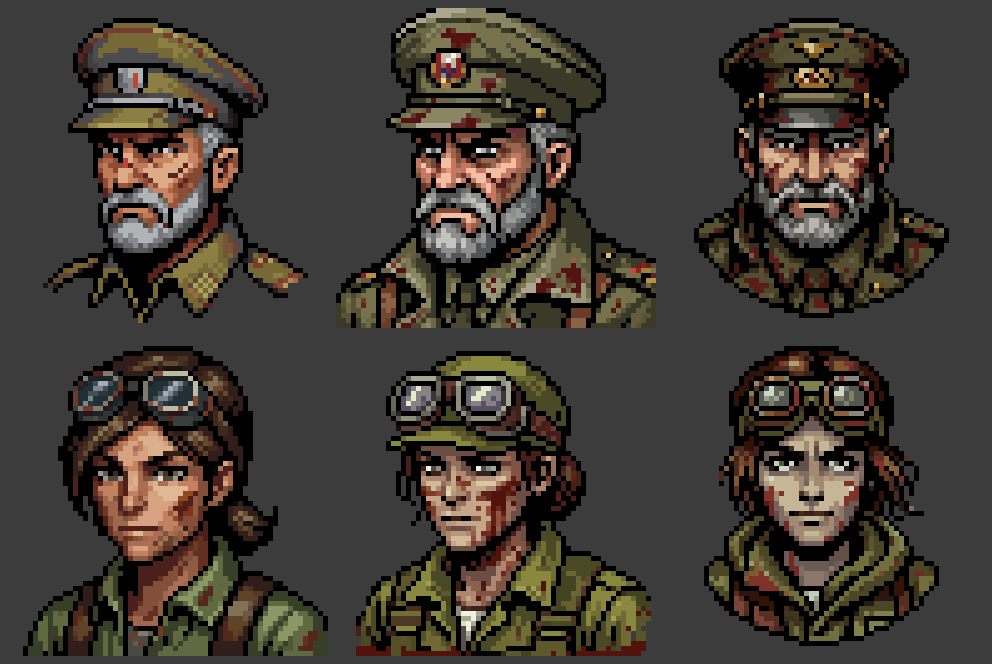
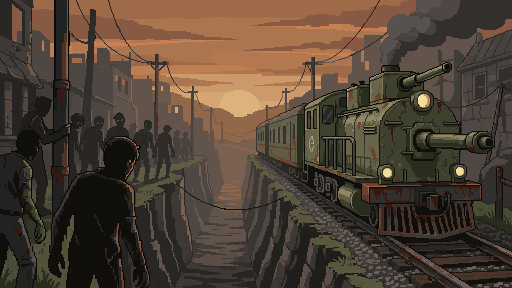
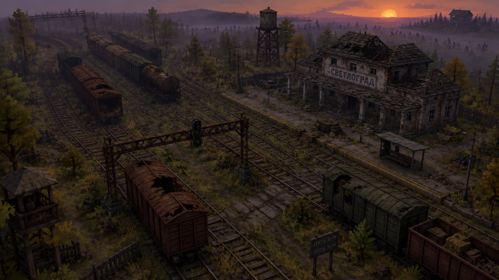
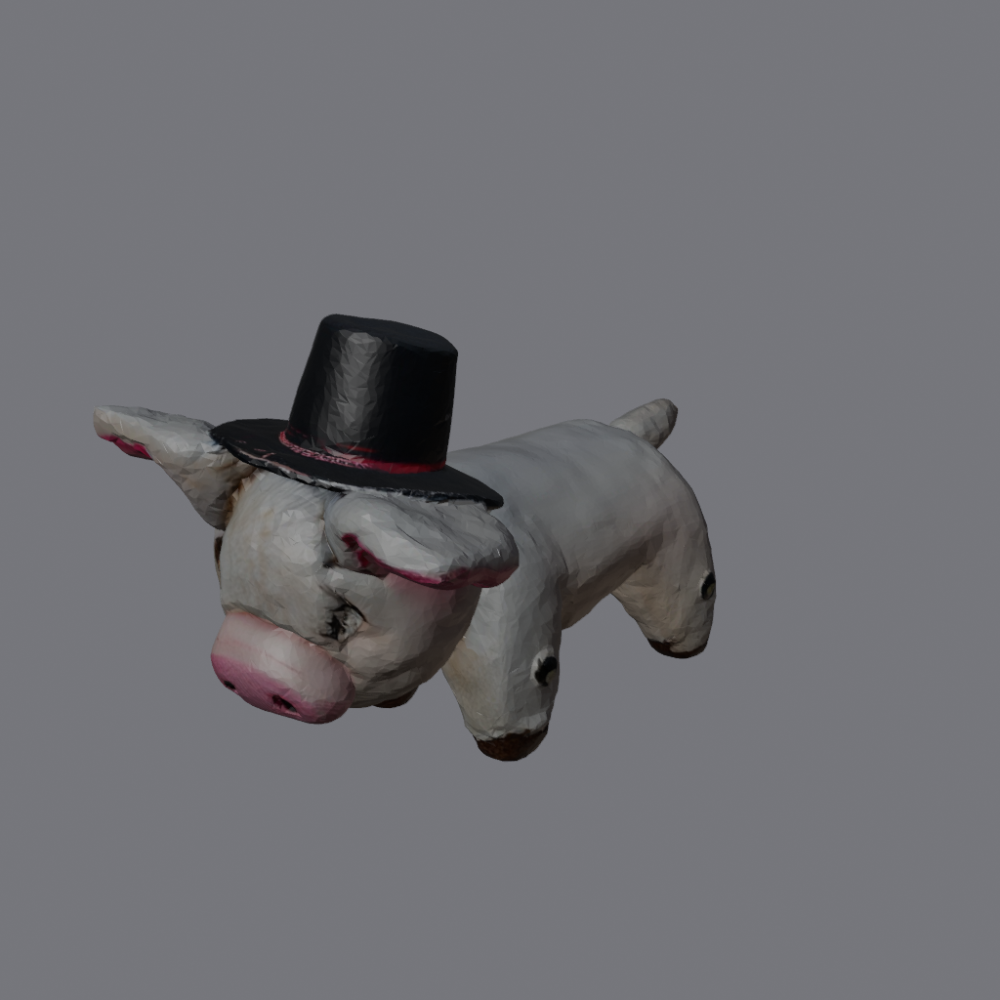

Proyecto · RTS de supervivencia zombi en Unity 6.3 LTS
RTS zombi
Fuente viva del proyecto: GDD, ideas, assets y sonidos, con el historial de cómo cambia cada cosa respecto a la idea original. Cada pestaña de esta tarjeta tiene su documento. Última actualización: 5-nov-2026.
Estado preparación
- AhoraPreparación del entorno: Unity 6.3 LTS instalada por Eugenio, repositorios creados (
TBDpara el juego ymr-mak-workspacepara mr.mak). El proyecto de Unity no está creado: espera a que Eugenio confirme que la guía está completada. - SiguienteCrear el proyecto (URP, Entities 1.5.0, Entities Graphics 1.5.0), conectar MCP for Unity, primer commit y push; el hilo de diseño cierra el GDD v0.1.
- BloqueosNinguno técnico. Pendiente: confirmar la versión exacta de Unity y que la licencia Personal está activa.
- Fecha límiteLote de Pixelab antes del 12-nov (el plan se reinicia el 17-nov y probablemente no se renueve).
Qué hay en cada pestaña
| Pestaña | Contenido |
|---|---|
| GDD | Documento vivo, una sección por sistema. Todo en PENDIENTE hasta el borrador. |
| Idea original | Copia congelada del primer GDD (vacía hasta cerrarlo). |
| Cambios | Registro de cada cambio respecto a la idea original, con motivo. |
| Decisiones | Decisiones D-xxx con estado y origen. |
| Investigación | Fuentes y referencias, con imágenes. |
| Arte | Piloto de Pixelab, imagen de referencia y prueba 3D con Hunyuan. |
| Audio | Banco de sonidos (vacío por ahora). |
| Herramientas | Guía de preparación del entorno. |
Decisiones recientes
- D-001 · MotorUnity 6.3 LTS con URP y Entities 1.5.0. Aceptada.
- D-002 · 3DHunyuan para vehículos y edificios clave. Aceptada.
- D-003 · ImágenesAPI de ElevenLabs (plan Pro): GPT Image 2.5 o Nano Banana Pro. Propuesta.
- D-004 · PixelabSolo capa 2D; lote antes del 12-nov. Aceptada.
- D-006 · Unity 6.6No usarla: no es LTS y Entities cambia de API. Abierta.
Primeras pruebas de arte
Detalle, costes y observaciones en la pestaña Arte. Nada está aprobado todavía.



